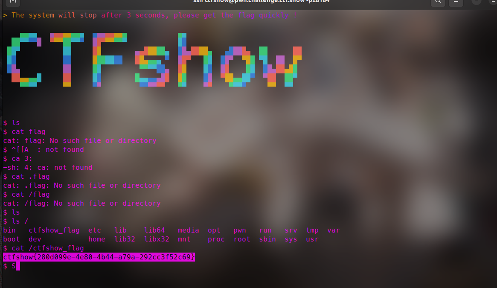
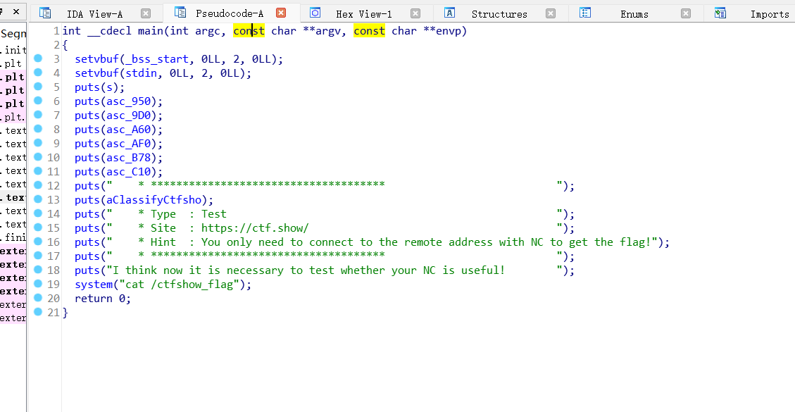
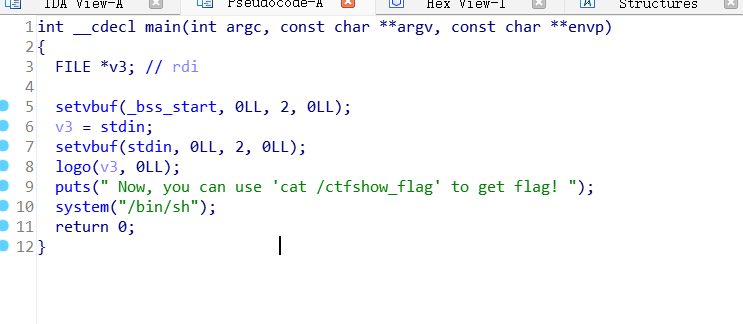
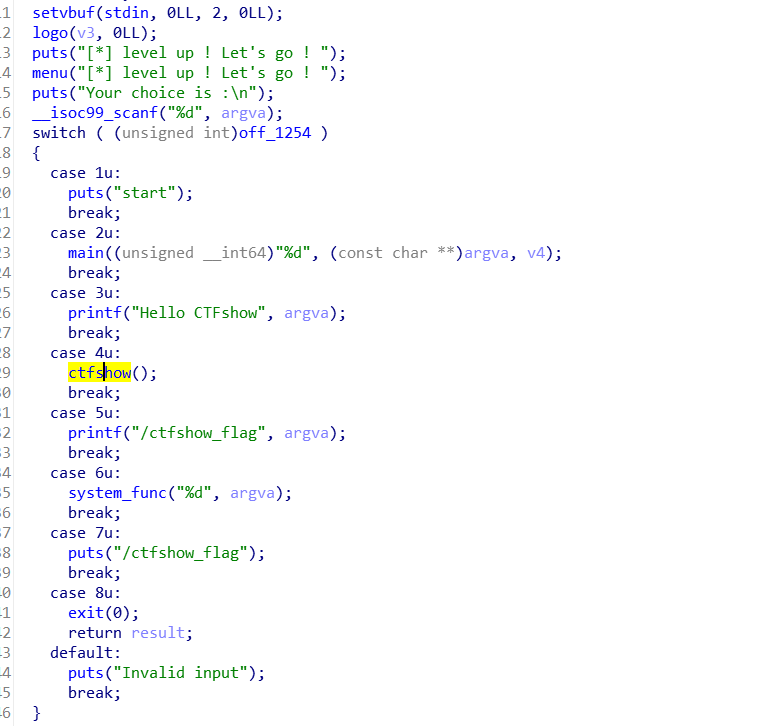
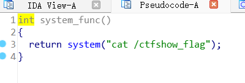
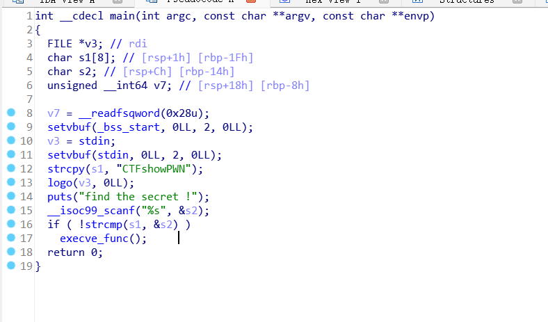
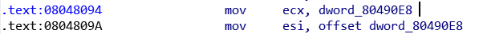
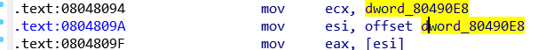
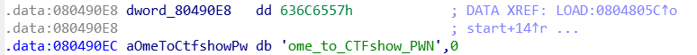

从零开始的pwn生活
pwn0
ssh ctfshow@pwn.challenge.ctf.show -p28184 # 123456ssh连接会有一段炫酷的画面

pwn1
IDA反编译一下附件

nc直接给flag
pwn2

太友好了 直接给了shell
pwn3


直接选6拿flag
pwn4

输入CTFshowPWN getshell
前置基础
pwn5
运行此文件，将得到的字符串以ctfshow{xxxxx}提交。
汇编代码
section .data
msg db "Welcome_to_CTFshow_PWN", 0
section .text
global _start
_start:
; 立即寻址方式
mov eax, 11 ; 将11赋值给eax
add eax, 114504 ; eax加上114504
sub eax, 1 ; eax减去1
; 寄存器寻址方式
mov ebx, 0x36d ; 将0x36d赋值给ebx
mov edx, ebx ; 将ebx的值赋值给edx
; 直接寻址方式
mov ecx, msg ; 将msg的地址赋值给ecx
; 寄存器间接寻址方式
mov esi, msg ; 将msg的地址赋值给esi
mov eax, [esi] ; 将esi所指向的地址的值赋值给eax
; 寄存器相对寻址方式
mov ecx, msg ; 将msg的地址赋值给ecx
add ecx, 4 ; 将ecx加上4
mov eax, [ecx] ; 将ecx所指向的地址的值赋值给eax
; 基址变址寻址方式
mov ecx, msg ; 将msg的地址赋值给ecx
mov edx, 2 ; 将2赋值给edx
mov eax, [ecx + edx*2] ; 将ecx+edx*2所指向的地址的值赋值给eax
; 相对基址变址寻址方式
mov ecx, msg ; 将msg的地址赋值给ecx
mov edx, 1 ; 将1赋值给edx
add ecx, 8 ; 将ecx加上8
mov eax, [ecx + edx*2 - 6] ; 将ecx+edx*2-6所指向的地址的值赋值给eax
; 输出字符串
mov eax, 4 ; 系统调用号4代表输出字符串
mov ebx, 1 ; 文件描述符1代表标准输出
mov ecx, msg ; 要输出的字符串的地址
mov edx, 22 ; 要输出的字符串的长度
int 0x80 ; 调用系统调用
; 退出程序
mov eax, 1 ; 系统调用号1代表退出程序
xor ebx, ebx ; 返回值为0s
int 0x80 ; 调用系统调用
使用NASM汇编器和ld链接器编译成可执行文件。
使用以下命令将其编译为对象文件
nasm -f elf pwn5_1.asm这将生成一个名为pwn5_1.o 的对象文件。接下来，使用以下命令将对象文件链接成可执行文件：
ld -m elf_i386 -s -o pwn5_1 pwn5_1.old 是 Linux 下的链接器，用于将一个或多个对象文件（.o 文件）和库文件链接成可执行文件或库文件。在你提供的命令中：
ld：链接器程序本身。-m elf_i386：指定生成的目标文件格式为elf_i386，这是为 32 位 Intel 架构计算机生成的 ELF（Executable and Linkable Format）格式。-s：这个选项告诉链接器在生成的可执行文件中剥离所有符号信息。这通常用于减少可执行文件的大小，并且可能用于安全目的，以防止某些类型的逆向工程。-o pwn5_1：指定输出文件的名称为pwn5_1。pwn5_1.o：这是要链接的对象文件。
这将生成一个名为 pwn5_1 的可执行文件 (事实上题目附件第二个就是)
运行pwn5_1或者pwn5_2即可
pwn6(立即寻址)
立即寻址方式结束后eax寄存器的值为？
立即寻址方式
mov eax, 11 ; 将11赋值给eax
add eax, 114504 ; eax加上114504
sub eax, 1 ; eax减去111+114504-1=114514
pwn7(寄存器寻址)
寄存器寻址方式结束后edx寄存器的值为？
寄存器寻址方式
mov ebx, 0x36d ; 将0x36d赋值给ebx
mov edx, ebx ; 将ebx的值赋值给edx0x36D
pwn8(直接寻址)
直接寻址方式结束后ecx寄存器的值为？
section .data
msg db "Welcome_to_CTFshow_PWN", 0
直接寻址方式
mov ecx, [msg] ; 将msg的地址赋值给ecx
0x80490E8
pwn9(寄存器间接寻址)
寄存器间接寻址方式结束后eax寄存器的值为？
寄存器间接寻址方式
mov esi, msg ; 将msg的地址赋值给esi
mov eax, [esi] ; 将esi所指向的地址的值赋值给eax
0x636C6557
pwn10(寄存器相对寻址)
寄存器相对寻址方式结束后eax寄存器的值为？
寄存器相对寻址方式
mov ecx, msg ; 将msg的地址赋值给ecx
add ecx, 4 ; 将ecx加上4
mov eax, [ecx] ; 将ecx所指向的地址的值赋值给eax
080490E8+4=080490EC “ome_to_CTFshow_PWN”
pwn11(基址变址寻址)
基址变址寻址方式结束后的eax寄存器的值为？
基址变址寻址方式
mov ecx, msg ; 将msg的地址赋值给ecx
mov edx, 2 ; 将2赋值给edx
mov eax, [ecx + edx*2] ; 将ecx+edx*2所指向的地址的值赋值给eax080490E8+2*2=080490EC “ome_to_CTFshow_PWN”
pwn12(相对基址变址寻址)
相对基址变址寻址方式结束后eax寄存器的值为？
相对基址变址寻址方式
mov ecx, msg ; 将msg的地址赋值给ecx
mov edx, 1 ; 将1赋值给edx
add ecx, 8 ; 将ecx加上8
mov eax, [ecx + edx*2 - 6] ; 将ecx+edx*2-6所指向的地址的值赋值给eax080490E8+8+1*2-6=080490EC “ome_to_CTFshow_PWN”
pwn13(gcc)
如何使用GCC？编译运行后即可获得flag
gcc flag.c -o flag
./flag
ctfshow{hOw_t0_us3_GCC?}pwn14
请你阅读以下源码，给定key为”CTFshow”，编译运行即可获得flag
#include <stdio.h>
#include <stdlib.h>
#define BUFFER_SIZE 1024
int main() {
FILE *fp;
unsigned char buffer[BUFFER_SIZE];
size_t n;
fp = fopen("pwn14_key", "rb");
if (fp == NULL) {
perror("Nothing here!");
return -1;
}
char output[BUFFER_SIZE * 9 + 12];
int offset = 0;
offset += sprintf(output + offset, "ctfshow{");
while ((n = fread(buffer, sizeof(unsigned char), BUFFER_SIZE, fp)) > 0) {
for (size_t i = 0; i < n; i++) {
for (int j = 7; j >= 0; j--) {
offset += sprintf(output + offset, "%d", (buffer[i] >> j) & 1);
}
if (i != n - 1) {
offset += sprintf(output + offset, "_");
}
}
if (!feof(fp)) {
offset += sprintf(output + offset, " ");
}
}
offset += sprintf(output + offset, "}");
printf("%s\n", output);
fclose(fp);
return 0;
}
程序打开名为 “pwn14_key” 的文件，以二进制（”rb”）模式进行读取。如果文件打开失败，将输出错误消息 “Nothing here!” 并返回 -1。
接下去就是通过循环将fp的值（也就是key的内容）逐个转为8位二进制数，通过”_”连接，用ctfshow{}包裹后存入output中
echo "CTFshow" > pwn14_key
gcc pwn14_flag.c -o pwn14
./pwn14
ctfshow{01000011_01010100_01000110_01110011_01101000_01101111_01110111_00001010}pwn15(nasm)
编译汇编代码到可执行文件，即可拿到flag
这段代码是一个使用 x86 汇编语言编写的程序，用于在标准输出上打印一串特定格式的字符串。要将这段代码编译为可执行文件，使用汇编器和链接器进行以下步骤：
section .data
str1 db "CTFshow",0
str2 db "_3@sy",0
str3 db "@ss3mb1y",0
str4 db "_1s",0
str5 db "ctfshow{"
str6 db "}"
section .text
global _start
_start:
mov eax, 4
mov ebx, 1
mov ecx, str5
mov edx, 8
int 0x80
mov eax, 4
mov ebx, 1
mov ecx, str3
mov edx, 8
int 0x80
mov eax, 4
mov ebx, 1
mov ecx, str4
mov edx, 3
int 0x80
mov eax, 4
mov ebx, 1
mov ecx, str2
mov edx, 5
int 0x80
mov eax, 4
mov ebx, 1
mov ecx, str6
mov edx, 1
int 0x80
mov eax, 1
xor ebx, ebx
int 0x80 nasm -f elf pwn15_flag.asm -o pwn15.o
ld -m elf_i386 -o pwn15 pwn15.o
./pwn15
ctfshow{@ss3mb1y_1s_3@sy}pwn16(gcc .s)
使用gcc将其编译为可执行文件
.s 文件是汇编语言源文件的一种常见扩展名。它包含了使用汇编语言编写的程序代码。汇编语言是一种低级编程语言，用于直接操作计算机的指令集架构。 .s 文件通常由汇编器（Assembler）处理，将其转换为可执行文件或目标文件。可以使用 gcc 命令直接编译汇编语言源文件（ .s 文件）并将其链接为可执行文件。 gcc 命令具有适用于多种语言的编译器驱动程序功能，它可以根据输入文件的扩展名自动选择适当的编译器和链接器
gcc pwn16_flag.s -o pwn16
./pwn16
ctfshow{daniuniuda}